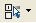

|  |
Select
a Screen |
This option
displays a drop down list of the displayable screens for the active
theme.
From
this list you can:
- Specify
which screens are
displayed in the Gallery view by selecting in the preferences option.
- Open
a screen in the
Editor by selecting the screen from Gallery view
|
|
Switch
between
User defined and full screen set |
This
option
allows you to switch the screens displayed in the Gallery view between
the full set of screens and the user defined set (as defined using the
Selecting a screen tool button). |
|
Switch
between
Preview and Brochure layout mode |
This option
allows you to view the themes in:
- Preview
mode.
- Brochure layout mode.
|
 |
Minimize |
Minimizes the Gallery
view |
 |
Maximize |
Maximize the Gallery view |
 |
Close
|
Closes the Gallery view |